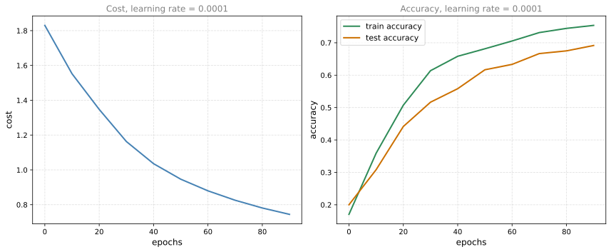

import h5py
import numpy as np
import tensorflow as tf
import matplotlib.pyplot as plt
from tensorflow.python.framework.ops import EagerTensor
from tensorflow.python.ops.resource_variable_ops import ResourceVariableLab: Introduction to TensorFlow
deep-learning
lab
tensorflow
gradient-tape
Build and train a six-class sign language classifier in TensorFlow, using tf.Variable, tf.data datasets, GradientTape, and the Adam optimizer.
Up until now you have always used NumPy to build neural networks. This lab explores a deep learning framework that lets you build them more easily, putting the frameworks and TensorFlow page into practice on a real classification problem. By the end you will be able to use tf.Variable to modify the state of a variable, explain the difference between a variable and a constant, and train a neural network on a TensorFlow dataset.
Frameworks like TensorFlow not only cut down on time spent coding, they can also perform optimizations that speed up the code itself. The biggest change from the NumPy labs is that you only implement forward propagation. TensorFlow records the operations as they run and works out the derivatives for you.
Packages
The lab needs only a handful of imports. h5py reads the dataset files, and the two long import lines bring in the tensor and variable types so the checks below can verify that the right kind of object came back.
NoteLab Files Download
Everything this lab needs, ready to download. Both files are HDF5 archives, the format h5py reads.
- train_signs.h5 (13 MB), 1,080 training images with their labels
- test_signs.h5 (1.4 MB), 120 test images with their labels
To run the lab outside this page, put both files in a datasets/ folder next to your notebook, which is the layout the original course code expects.
WarningVersion Note
The course assignment was written for TensorFlow 2.3. This page runs on a current release, which bundles Keras 3, and the code is identical apart from one renamed method. The Keras 2 call metric.reset_states() became metric.reset_state(), singular, and that is the form used in the training loop below.
Sign Language Dataset
The data is stored in HDF5 files, which you can use in place of NumPy arrays to hold a dataset. Reading them gives you file objects whose keys behave like arrays.
train_dataset = h5py.File('../../media/deep-learning/tensorflow-introduction/train_signs.h5', "r")
test_dataset = h5py.File('../../media/deep-learning/tensorflow-introduction/test_signs.h5', "r")From those arrays you build TensorFlow datasets with tf.data.Dataset.from_tensor_slices, which slices the first dimension so that each element of the resulting dataset is one image or one label. Think of the result as a TensorFlow data generator.
x_train = tf.data.Dataset.from_tensor_slices(train_dataset['train_set_x'])
y_train = tf.data.Dataset.from_tensor_slices(train_dataset['train_set_y'])
x_test = tf.data.Dataset.from_tensor_slices(test_dataset['test_set_x'])
y_test = tf.data.Dataset.from_tensor_slices(test_dataset['test_set_y'])Because TensorFlow datasets are generators, you cannot index into them the way you index a NumPy array. You reach the contents by iterating in a for loop, or by creating a Python iterator with iter and pulling elements out with next. The element_spec attribute reports the shape and dtype of a single element without consuming anything.
print(x_train.element_spec)TensorSpec(shape=(64, 64, 3), dtype=tf.uint8, name=None)Each element is a \(64 \times 64 \times 3\) image of 8-bit unsigned integers, which is a color photograph 64 pixels on a side with three color channels. Here is the first one, printed as a raw tensor.
print(next(iter(x_train)))tf.Tensor(
[[[227 220 214]
[227 221 215]
[227 222 215]
...
[232 230 224]
[231 229 222]
[230 229 221]]
[[227 221 214]
[227 221 215]
[228 221 215]
...
[232 230 224]
[231 229 222]
[231 229 221]]
[[227 221 214]
[227 221 214]
[227 221 215]
...
[232 230 224]
[231 229 223]
[230 229 221]]
...
[[119 81 51]
[124 85 55]
[127 87 58]
...
[210 211 211]
[211 212 210]
[210 211 210]]
[[119 79 51]
[124 84 55]
[126 85 56]
...
[210 211 210]
[210 211 210]
[209 210 209]]
[[119 81 51]
[123 83 55]
[122 82 54]
...
[209 210 210]
[209 210 209]
[208 209 209]]], shape=(64, 64, 3), dtype=uint8)The dataset is a subset of the sign language digits. It contains six classes, representing the digits from 0 to 5. Collecting the labels into a Python set confirms which values appear.
unique_labels = set()
for element in y_train:
unique_labels.add(element.numpy())
print(unique_labels){np.int64(0), np.int64(1), np.int64(2), np.int64(3), np.int64(4), np.int64(5)}Twenty-five of the images, with their labels as titles, look like this.
images_iter = iter(x_train)
labels_iter = iter(y_train)
plt.figure(figsize=(10, 10))
for i in range(25):
ax = plt.subplot(5, 5, i + 1)
plt.imshow(next(images_iter).numpy().astype("uint8"))
plt.title(next(labels_iter).numpy().astype("uint8"))
plt.axis("off")
plt.show()
Transforming a Dataset with map
There is one more difference between TensorFlow datasets and NumPy arrays. To transform one, you invoke the map method, which applies the function you pass to each element.
The transformation needed here does two things. It casts the pixel values to float32 and divides by 255, so that the values run from 0 to 1 instead of 0 to 255, and it flattens the \(64 \times 64 \times 3\) image into a single column of \(64 \times 64 \times 3 = 12{,}288\) numbers. The -1 in the reshape tells TensorFlow to work out that length itself.
def normalize(image):
"""
Transform an image into a tensor of shape (64 * 64 * 3, )
and normalize its components.
Arguments
image - Tensor.
Returns:
result -- Transformed tensor
"""
image = tf.cast(image, tf.float32) / 255.0
image = tf.reshape(image, [-1,])
return imagenew_train = x_train.map(normalize)
new_test = x_test.map(normalize)
new_train.element_specTensorSpec(shape=(12288,), dtype=tf.float32, name=None)The element spec now reports a flat vector of 12,288 floats, which is exactly the input layer size the network will expect.
Basic Optimization with GradientTape
The main object you get used to handling in TensorFlow is the tf.Tensor, the TensorFlow equivalent of a NumPy array. It is a multidimensional array of a given data type that also carries information about the computational graph.
Below you will use tf.Variable to store the state of your variables. A variable can only be created once, because its initial value fixes its shape and type. The dtype argument converts the data to that type, and if you do not supply one, TensorFlow either keeps the dtype of the initial value or decides for itself. It is generally best to state it directly so that nothing breaks.
Linear Function
Start by computing \(Y = WX + b\), where \(W\) and \(X\) are random matrices and \(b\) is a random vector. Here \(W\) has shape \((4, 3)\), \(X\) has shape \((3, 1)\), and \(b\) has shape \((4, 1)\).
Two TensorFlow calls do the work. tf.matmul multiplies two matrices and tf.add adds. The important detail is the choice of tf.constant over tf.Variable. A constant cannot be modified after creation, and none of these three quantities is going to be learned, so a constant is the honest choice.
def linear_function():
"""
Implements a linear function:
Initializes X to be a random tensor of shape (3,1)
Initializes W to be a random tensor of shape (4,3)
Initializes b to be a random tensor of shape (4,1)
Returns:
result -- Y = WX + b
"""
np.random.seed(1)
X = tf.constant(np.random.randn(3, 1), name="X")
W = tf.constant(np.random.randn(4, 3), name="W")
b = tf.constant(np.random.randn(4, 1), name="b")
Y = tf.add(tf.matmul(W, X), b)
return YThe variables are created in that exact order because np.random.seed(1) makes the draws reproducible only if they are consumed in the same sequence.
result = linear_function()
print(result)
print("\ntype:", type(result).__name__)tf.Tensor(
[[-2.15657382]
[ 2.95891446]
[-1.08926781]
[-0.84538042]], shape=(4, 1), dtype=float64)
type: EagerTensorRead the whole repr, not just the numbers. It says tf.Tensor, with a shape=(4, 1) and a dtype=float64, and the type is an EagerTensor. That last detail is the point of the exercise. Eager means the multiplication already happened and the values are sitting there, rather than TensorFlow having recorded a plan to compute them later. Every operation in this lab behaves that way, which is what makes a TensorFlow tensor feel so close to a NumPy array.
Computing the Sigmoid
TensorFlow ships the neural network functions you already know, such as tf.sigmoid and tf.softmax. The sigmoid implementation here first casts its input to float32, because tf.keras.activations.sigmoid accepts only floating point and complex types, and passing it a Python integer would fail.
def sigmoid(z):
"""
Computes the sigmoid of z
Arguments:
z -- input value, scalar or vector
Returns:
a -- (tf.float32) the sigmoid of z
"""
z = tf.cast(z, tf.float32)
a = tf.keras.activations.sigmoid(z)
return aresult = sigmoid(-1)
print("type: " + str(type(result)))
print("dtype: " + str(result.dtype))
print("sigmoid(-1) = " + str(result))
print("sigmoid(0) = " + str(sigmoid(0.0)))
print("sigmoid(12) = " + str(sigmoid(12)))type: <class 'tensorflow.python.framework.ops.EagerTensor'>
dtype: <dtype: 'float32'>
sigmoid(-1) = tf.Tensor(0.26894143, shape=(), dtype=float32)
sigmoid(0) = tf.Tensor(0.5, shape=(), dtype=float32)
sigmoid(12) = tf.Tensor(0.99999386, shape=(), dtype=float32)The three values are the familiar ones, \(\sigma(-1) \approx 0.269\), \(\sigma(0) = 0.5\), and \(\sigma(12) \approx 0.99999\). The returned object is an EagerTensor of dtype float32, not a NumPy float, which is what makes it usable inside a computational graph.
One Hot Encodings
In deep learning you often have a label vector \(y\) holding numbers from \(0\) to \(C - 1\), where \(C\) is the number of classes, and you need it converted into a matrix with one column per example. Taking \(C = 4\) and six examples,
\[ y = \begin{bmatrix} 1 & 2 & 3 & 0 & 2 & 1 \end{bmatrix} \quad \text{is often converted to} \quad \begin{bmatrix} 0 & 0 & 0 & 1 & 0 & 0 \\ 1 & 0 & 0 & 0 & 0 & 1 \\ 0 & 1 & 0 & 0 & 1 & 0 \\ 0 & 0 & 1 & 0 & 0 & 0 \end{bmatrix} \begin{matrix} \leftarrow \text{class } 0 \\ \leftarrow \text{class } 1 \\ \leftarrow \text{class } 2 \\ \leftarrow \text{class } 3 \end{matrix} \]
Reading a column of the matrix tells you the label of that example. The third example has label 3, so its column has a 1 in the class 3 row and zeros elsewhere. The fifth example has label 2, so its 1 sits in the class 2 row. This is called one hot encoding, because in the converted representation exactly one element of each column is hot, meaning set to 1.
In NumPy this takes a few lines. In TensorFlow, tf.one_hot(labels, depth, axis=0) does it in one, where axis=0 says the new axis is created at dimension 0. The function below handles a single label and returns a one-dimensional tensor of length \(C\), with tf.reshape flattening whatever shape tf.one_hot produced.
def one_hot_matrix(label, C=6):
"""
Computes the one hot encoding for a single label
Arguments:
label -- (int) Categorical labels
C -- (int) Number of different classes that label can take
Returns:
one_hot -- tf.Tensor A one-dimensional tensor (array) with the one hot encoding.
"""
one_hot = tf.reshape(tf.one_hot(label, C, axis=0), shape=[C, ])
return one_hotprint("Test 1:", one_hot_matrix(tf.constant(1), 4))
print("Test 2:", one_hot_matrix([2], 5))Test 1: tf.Tensor([0. 1. 0. 0.], shape=(4,), dtype=float32)
Test 2: tf.Tensor([0. 0. 1. 0. 0.], shape=(5,), dtype=float32)Mapping the function over the label datasets converts every label in one go. Because the function takes one label at a time, map is what turns it into a whole-dataset transformation.
new_y_train = y_train.map(one_hot_matrix)
new_y_test = y_test.map(one_hot_matrix)
print(next(iter(new_y_test)))tf.Tensor([1. 0. 0. 0. 0. 0.], shape=(6,), dtype=float32)Initializing the Parameters
Now initialize the parameters with the Glorot initializer, through tf.keras.initializers.GlorotNormal. It draws samples from a truncated normal distribution centered on 0, with standard deviation \(\sqrt{2 / (\text{fan}_{\text{in}} + \text{fan}_{\text{out}})}\), where \(\text{fan}_{\text{in}}\) is the number of input units and \(\text{fan}_{\text{out}}\) the number of output units of the weight tensor. To initialize with zeros or ones instead, you would use tf.zeros() or tf.ones().
The network is three layers deep, \(12288 \to 25 \to 12 \to 6\), so the shapes follow from the layer sizes. These six quantities are the ones the optimizer will change, which is why each is wrapped in tf.Variable rather than tf.constant.
def initialize_parameters():
"""
Initializes parameters to build a neural network with TensorFlow. The shapes are:
W1 : [25, 12288]
b1 : [25, 1]
W2 : [12, 25]
b2 : [12, 1]
W3 : [6, 12]
b3 : [6, 1]
Returns:
parameters -- a dictionary of tensors containing W1, b1, W2, b2, W3, b3
"""
initializer = tf.keras.initializers.GlorotNormal(seed=1)
W1 = tf.Variable(initializer(shape=(25, 12288)))
b1 = tf.Variable(initializer(shape=(25, 1)))
W2 = tf.Variable(initializer(shape=(12, 25)))
b2 = tf.Variable(initializer(shape=(12, 1)))
W3 = tf.Variable(initializer(shape=(6, 12)))
b3 = tf.Variable(initializer(shape=(6, 1)))
parameters = {"W1": W1,
"b1": b1,
"W2": W2,
"b2": b2,
"W3": W3,
"b3": b3}
return parametersparameters = initialize_parameters()
for key in parameters:
values = parameters[key].numpy()
print(f"{key} shape {str(tuple(parameters[key].shape)):>10} "
f"type {type(parameters[key]).__name__:<16} "
f"mean {values.mean():+.4f} std {values.std():.4f}")W1 shape (25, 12288) type ResourceVariable mean -0.0000 std 0.0128
b1 shape (25, 1) type ResourceVariable mean -0.0140 std 0.2235
W2 shape (12, 25) type ResourceVariable mean +0.0042 std 0.2206
b2 shape (12, 1) type ResourceVariable mean -0.0923 std 0.3814
W3 shape (6, 12) type ResourceVariable mean -0.0106 std 0.2912
b3 shape (6, 1) type ResourceVariable mean -0.1856 std 0.3241Three columns of that output each say something.
The shapes follow \(W^{[l]} : (n^{[l]}, n^{[l-1]})\) and \(b^{[l]} : (n^{[l]}, 1)\), the same rule as in the NumPy implementation.
The type is ResourceVariable, not a plain tensor. That is what tf.Variable produces, and it is the difference that matters for training. A tensor is a value, while a variable is a value TensorFlow will track and update, so only variables can be handed to an optimizer.
The means and standard deviations are the fingerprint of the Glorot initializer. Every mean sits near zero and every standard deviation is well below one, which is the point. Weights drawn too large would saturate the activations, and weights drawn all equal would leave every unit in a layer computing the same thing forever.
The trend across the three weight matrices is the clearest signal. \(W^{[1]}\) is by far the widest, at \(25 \times 12288\), and its spread is roughly twenty times tighter than that of \(W^{[3]}\) at \(6 \times 12\). That is Glorot scaling the spread by the layer’s fan-in and fan-out, so that a unit receiving thousands of inputs does not end up with a wildly larger \(z\) than a unit receiving a dozen. Do not read too much into the bias rows. Each holds only a handful of numbers, so their standard deviations are noisy estimates rather than a trend.
Building the Neural Network
Two parts remain, implementing forward propagation, and retrieving the gradients to train the model.
Forward Propagation
One of TensorFlow’s great strengths is that you only need to implement the forward propagation function. It keeps track of the operations you performed and works out backpropagation automatically.
The architecture is LINEAR \(\to\) RELU \(\to\) LINEAR \(\to\) RELU \(\to\) LINEAR, computing
\[ Z^{[1]} = W^{[1]} X + b^{[1]}, \quad A^{[1]} = \text{ReLU}(Z^{[1]}), \quad Z^{[2]} = W^{[2]} A^{[1]} + b^{[2]}, \quad A^{[2]} = \text{ReLU}(Z^{[2]}), \quad Z^{[3]} = W^{[3]} A^{[2]} + b^{[3]} \]
Every operation uses the TensorFlow API rather than NumPy, because only TensorFlow operations get recorded for automatic differentiation. tf.linalg.matmul replaces np.dot, tf.math.add replaces +, and tf.keras.activations.relu replaces a hand-written ReLU.
Notice that softmax is not applied at the end. The function returns \(Z^{[3]}\), the raw scores of the last linear unit, which are called logits. The loss function in the next section applies softmax internally.
def forward_propagation(X, parameters):
"""
Implements the forward propagation for the model: LINEAR -> RELU -> LINEAR -> RELU -> LINEAR
Arguments:
X -- input dataset placeholder, of shape (input size, number of examples)
parameters -- python dictionary containing your parameters "W1", "b1", "W2", "b2", "W3", "b3"
the shapes are given in initialize_parameters
Returns:
Z3 -- the output of the last LINEAR unit
"""
W1 = parameters['W1']
b1 = parameters['b1']
W2 = parameters['W2']
b2 = parameters['b2']
W3 = parameters['W3']
b3 = parameters['b3']
Z1 = tf.math.add(tf.linalg.matmul(W1, X), b1) # Z1 = np.dot(W1, X) + b1
A1 = tf.keras.activations.relu(Z1) # A1 = relu(Z1)
Z2 = tf.math.add(tf.linalg.matmul(W2, A1), b2) # Z2 = np.dot(W2, A1) + b2
A2 = tf.keras.activations.relu(Z2) # A2 = relu(Z2)
Z3 = tf.math.add(tf.linalg.matmul(W3, A2), b3) # Z3 = np.dot(W3, A2) + b3
return Z3Running it on a mini-batch of two examples gives a \((6, 2)\) tensor, six scores for each of the two images. The transpose is needed because the dataset stores one example per row, while the network expects one example per column.
minibatch = list(new_train.batch(2))[0]
forward_pass = forward_propagation(tf.transpose(minibatch), initialize_parameters())
print(forward_pass)tf.Tensor(
[[-0.13430887 0.14086473]
[ 0.21588641 -0.02582335]
[ 0.70596576 0.6484557 ]
[-1.1260962 -0.9329492 ]
[-0.20181894 -0.33827227]
[ 0.95589626 0.94167554]], shape=(6, 2), dtype=float32)Total Loss
With six labels this is a multiclass classification problem, so categorical cross entropy is the loss to use. You are used to computing a cost that sums the losses over the whole training set and then divides by the number of examples. Here that happens in two steps.
In step one, compute_total_loss sums the losses of a single mini-batch. In step two, the training loop calls it once per mini-batch, accumulates those sums, and divides by the total number of examples at the end of the epoch.
Summing rather than averaging in step one keeps the final cost consistent. Suppose the mini-batch size is 4 but the training set has 5 examples, so the last mini-batch holds a single example. If the five losses are \(0, 1, 2, 3, 4\), the correct average is 2. The total loss approach gives exactly that. The mean loss approach would produce \(1.5\) for the first mini-batch and \(4\) for the second, and averaging those two numbers gives \(2.75\), which is wrong.
Two details matter in the implementation. tf.keras.losses.categorical_crossentropy expects both y_pred and y_true with shape (number of examples, number of classes), which is why both arguments are transposed. And from_logits=True tells it that the input is raw scores, so it applies the softmax itself, which is the step deliberately skipped in forward propagation.
def compute_total_loss(logits, labels):
"""
Computes the total loss
Arguments:
logits -- output of forward propagation (output of the last LINEAR unit), of shape (6, num_examples)
labels -- "true" labels vector, same shape as Z3
Returns:
total_loss - Tensor of the total loss value
"""
total_loss = tf.reduce_sum(
tf.keras.losses.categorical_crossentropy(tf.transpose(labels),
tf.transpose(logits),
from_logits=True))
return total_losspred = tf.constant([[2.4048107, 5.0334096],
[-0.7921977, -4.1523376],
[0.9447198, -0.46802214],
[1.158121, 3.9810789],
[4.768706, 2.3220146],
[6.1481323, 3.909829]])
for minibatch in new_y_train.batch(2):
print("Test 1: ", compute_total_loss(pred, tf.transpose(minibatch)))
break
labels = tf.constant([[1., 0., 0.], [0., 1., 0.], [0., 0., 1.]])
logits = tf.constant([[1., 0., 0.], [1., 0., 0.], [1., 0., 0.]])
print("Test 2: ", compute_total_loss(logits, labels))Test 1: tf.Tensor(0.810287, shape=(), dtype=float32)
Test 2: tf.Tensor(3.295837, shape=(), dtype=float32)
NoteLearning Rate and Mini-Batch Size
When you use a sum of losses for the gradient computation rather than a mean, the size of the gradient grows with the mini-batch size. It is therefore important to reduce the learning rate as the mini-batch grows, so that you do not take enormous steps toward the minimum.
Training the Model
The optimizer takes one line, tf.keras.optimizers.Adam, and is then called inside the training loop. Three pieces do the actual learning.
tf.GradientTaperecords the operations of the forward pass so they can be differentiated. Everything whose gradient you want must happen inside thewithblock.tape.gradientretrieves the recorded operations and returns the derivative of the loss with respect to each trainable variable.optimizer.apply_gradientsapplies Adam’s update rule to each trainable variable, pairing gradients with variables through the built-inzip.
One extra step appears in the batching. dataset.prefetch(8) prevents a memory bottleneck when reading from disk by setting some data aside and keeping it ready for when it is needed. Because the iteration streams, the data never has to fit in memory all at once.
The CategoricalAccuracy metric tracks how often the highest score belongs to the right class. It accumulates across mini-batches, so it is reset at the start of each epoch with reset_state().
def model(X_train, Y_train, X_test, Y_test, learning_rate=0.0001,
num_epochs=1500, minibatch_size=32, print_cost=True):
"""
Implements a three-layer tensorflow neural network: LINEAR->RELU->LINEAR->RELU->LINEAR->SOFTMAX.
Arguments:
X_train -- training set, of shape (input size = 12288, number of training examples = 1080)
Y_train -- training labels, of shape (output size = 6, number of training examples = 1080)
X_test -- test set, of shape (input size = 12288, number of test examples = 120)
Y_test -- test labels, of shape (output size = 6, number of test examples = 120)
learning_rate -- learning rate of the optimization
num_epochs -- number of epochs of the optimization loop
minibatch_size -- size of a minibatch
print_cost -- True to print the cost every 10 epochs
Returns:
parameters -- parameters learnt by the model. They can then be used to predict.
"""
costs = [] # To keep track of the cost
train_acc = []
test_acc = []
parameters = initialize_parameters()
W1 = parameters['W1']
b1 = parameters['b1']
W2 = parameters['W2']
b2 = parameters['b2']
W3 = parameters['W3']
b3 = parameters['b3']
optimizer = tf.keras.optimizers.Adam(learning_rate)
# The CategoricalAccuracy will track the accuracy for this multiclass problem
test_accuracy = tf.keras.metrics.CategoricalAccuracy()
train_accuracy = tf.keras.metrics.CategoricalAccuracy()
dataset = tf.data.Dataset.zip((X_train, Y_train))
test_dataset = tf.data.Dataset.zip((X_test, Y_test))
# We can get the number of elements of a dataset using the cardinality method
m = dataset.cardinality().numpy()
minibatches = dataset.batch(minibatch_size).prefetch(8)
test_minibatches = test_dataset.batch(minibatch_size).prefetch(8)
for epoch in range(num_epochs):
epoch_total_loss = 0.
# Reset the metric so accuracy is measured from 0 each epoch
train_accuracy.reset_state()
for (minibatch_X, minibatch_Y) in minibatches:
with tf.GradientTape() as tape:
# 1. predict
Z3 = forward_propagation(tf.transpose(minibatch_X), parameters)
# 2. loss
minibatch_total_loss = compute_total_loss(Z3, tf.transpose(minibatch_Y))
# We accumulate the accuracy of all the batches
train_accuracy.update_state(minibatch_Y, tf.transpose(Z3))
trainable_variables = [W1, b1, W2, b2, W3, b3]
grads = tape.gradient(minibatch_total_loss, trainable_variables)
optimizer.apply_gradients(zip(grads, trainable_variables))
epoch_total_loss += minibatch_total_loss
# We divide the epoch total loss over the number of samples
epoch_total_loss /= m
# Print the cost every 10 epochs
if print_cost == True and epoch % 10 == 0:
print("Cost after epoch %i: %f" % (epoch, epoch_total_loss))
print("Train accuracy:", train_accuracy.result())
# We evaluate the test set every 10 epochs to avoid computational overhead
for (minibatch_X, minibatch_Y) in test_minibatches:
Z3 = forward_propagation(tf.transpose(minibatch_X), parameters)
test_accuracy.update_state(minibatch_Y, tf.transpose(Z3))
print("Test accuracy:", test_accuracy.result())
costs.append(epoch_total_loss)
train_acc.append(train_accuracy.result())
test_acc.append(test_accuracy.result())
test_accuracy.reset_state()
return parameters, costs, train_acc, test_accTraining for 100 epochs takes well under a minute on a laptop.
parameters, costs, train_acc, test_acc = model(new_train, new_y_train,
new_test, new_y_test,
num_epochs=100)Cost after epoch 0: 1.830244
Train accuracy: tf.Tensor(0.17037037, shape=(), dtype=float32)
Test accuracy: tf.Tensor(0.2, shape=(), dtype=float32)
Cost after epoch 10: 1.552391
Train accuracy: tf.Tensor(0.35925925, shape=(), dtype=float32)
Test accuracy: tf.Tensor(0.30833334, shape=(), dtype=float32)
Cost after epoch 20: 1.347617
Train accuracy: tf.Tensor(0.5074074, shape=(), dtype=float32)
Test accuracy: tf.Tensor(0.44166666, shape=(), dtype=float32)
Cost after epoch 30: 1.162812
Train accuracy: tf.Tensor(0.61388886, shape=(), dtype=float32)
Test accuracy: tf.Tensor(0.51666665, shape=(), dtype=float32)
Cost after epoch 40: 1.035599
Train accuracy: tf.Tensor(0.65833336, shape=(), dtype=float32)
Test accuracy: tf.Tensor(0.55833334, shape=(), dtype=float32)
Cost after epoch 50: 0.946474
Train accuracy: tf.Tensor(0.6814815, shape=(), dtype=float32)
Test accuracy: tf.Tensor(0.6166667, shape=(), dtype=float32)
Cost after epoch 60: 0.879669
Train accuracy: tf.Tensor(0.70555556, shape=(), dtype=float32)
Test accuracy: tf.Tensor(0.6333333, shape=(), dtype=float32)
Cost after epoch 70: 0.825586
Train accuracy: tf.Tensor(0.7314815, shape=(), dtype=float32)
Test accuracy: tf.Tensor(0.6666667, shape=(), dtype=float32)
Cost after epoch 80: 0.781066
Train accuracy: tf.Tensor(0.74444443, shape=(), dtype=float32)
Test accuracy: tf.Tensor(0.675, shape=(), dtype=float32)
Cost after epoch 90: 0.744429
Train accuracy: tf.Tensor(0.7537037, shape=(), dtype=float32)
Test accuracy: tf.Tensor(0.69166666, shape=(), dtype=float32)The cost falls steadily and both accuracies climb, which is what you want to see. The numbers you get can differ a little from run to run, so check the trend rather than the exact digits.
Learning Curves
Plotting the recorded values makes the trend easier to read than a column of numbers. Each recorded point is ten epochs apart, since the training loop appended to the lists only when epoch % 10 == 0.
epochs = np.arange(len(costs)) * 10
fig, axes = plt.subplots(1, 2, figsize=(12, 5))
axes[0].plot(epochs, np.squeeze(costs), color='#4682B4', lw=2)
axes[0].set_xlabel('epochs', fontsize=12)
axes[0].set_ylabel('cost', fontsize=12)
axes[0].set_title('Cost, learning rate = 0.0001', fontsize=12, color='gray')
axes[0].grid(linestyle='--', alpha=0.4)
axes[1].plot(epochs, np.squeeze(train_acc), color='#2E8B57', lw=2, label='train accuracy')
axes[1].plot(epochs, np.squeeze(test_acc), color='#CC7000', lw=2, label='test accuracy')
axes[1].set_xlabel('epochs', fontsize=12)
axes[1].set_ylabel('accuracy', fontsize=12)
axes[1].set_title('Accuracy, learning rate = 0.0001', fontsize=12, color='gray')
axes[1].grid(linestyle='--', alpha=0.4)
axes[1].legend(fontsize=11)
plt.tight_layout()
plt.show()
Neither curve has flattened after 100 epochs, so this model is still underfitting and would keep improving with more training. The gap between the training and test curves is the variance you would watch as training continues, and the regularization techniques from earlier in the course are what you would reach for if that gap grew.
ImportantWhat to Remember from This Lab
- Tensors are multidimensional arrays that also carry the information TensorFlow needs to build a computational graph. A
tf.constantcannot be changed after creation, while atf.Variablecan, which is why parameters are variables and fixed data is a constant. tf.data.Datasetobjects are generators. You reach their contents with aforloop or withiterandnext, inspect them withelement_spec, and transform them withmap.- You implement only forward propagation.
tf.GradientTaperecords the operations,tape.gradientreturns the derivatives, andoptimizer.apply_gradientsapplies the update, so backpropagation never has to be written by hand. - Leaving softmax out of forward propagation and passing
from_logits=Trueto the loss is deliberate, because the loss function applies softmax internally in a more numerically stable way. - Summing the losses over a mini-batch, rather than averaging them, keeps the epoch cost correct when the last mini-batch is smaller than the others. Lower the learning rate when the mini-batch size grows.
Bibliography
Two resources go deeper into tf.GradientTape and what it records.